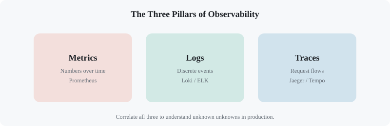
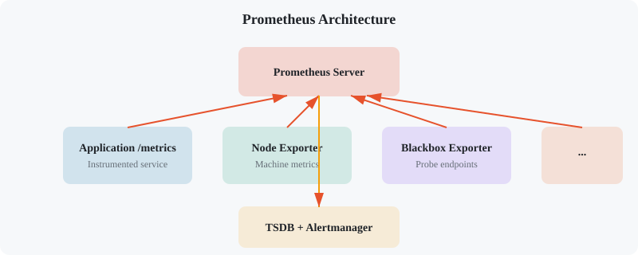
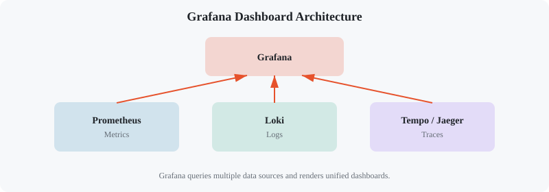
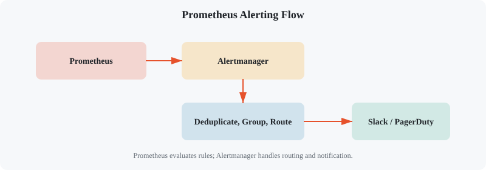
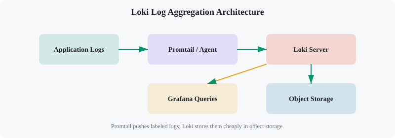
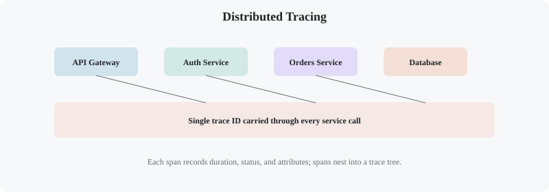

Monitoring & Observability: Prometheus, Grafana & Logging
Chapter 1
Introduction
Monitoring tells you when something is broken. Observability helps you understand why. In modern systems, metrics, logs, and traces are the three pillars that give engineers a complete picture of application health. This tutorial goes deep into Prometheus for metrics, Grafana for visualization, and logging patterns and aggregation with Loki.
Before you start
- Comfortable with Docker and Docker Compose.
- Basic command-line and YAML knowledge.
- A running application or service to monitor (we'll provide one).
What you'll learn
- ✓ Metrics, logs, and traces concepts
- ✓ Prometheus architecture and scrape model
- ✓ PromQL: selectors, aggregations, functions, recording rules
- ✓ Grafana dashboards, variables, and panels
- ✓ Alertmanager routing, silences, inhibition
- ✓ Logging patterns, levels, and structured logs
- ✓ Loki log aggregation and LogQL
- ✓ Exporters, instrumentation, and OpenTelemetry
What is the main difference between monitoring and observability?
Chapter 2
The Three Pillars
Observability is often described using three data types. They serve different purposes but work best when correlated.
Metrics
Numeric measurements over time. Great for dashboards, trends, and alerts. Examples: request rate, latency, CPU usage, error rate.
Logs
Discrete records of events. Great for debugging specific requests or failures. Examples: HTTP access logs, application errors, audit events.
Traces
End-to-end request flows across services. Great for distributed systems and performance bottlenecks. Examples: OpenTelemetry spans, Jaeger traces.
Correlation is key
The most effective debugging sessions start with a metric alert, drill into logs for the affected time window, and then use a trace to find the slow or failing service. A request ID carried through metrics, logs, and traces makes this possible.

Chapter 3
Metrics with Prometheus
Prometheus is an open-source metrics database and monitoring system. It uses a pull model: the Prometheus server periodically scrapes HTTP endpoints exposed by applications and exporters. Metrics are stored as time-series data identified by name and labels.

Prometheus scrapes targets, stores time-series, and can trigger alerts.
Core concepts
-
Targets:
endpoints Prometheus scrapes, usually
/metrics. - Exporters: sidecars that translate existing metrics into Prometheus format (Node Exporter, MySQL Exporter, Blackbox Exporter).
- Metrics types: Counter (always increases), Gauge (goes up and down), Histogram (buckets of observations), Summary (percentiles).
-
Labels:
key-value pairs that add dimensions to metrics (e.g.,
method="GET", status="200"). - Scrape interval: how often Prometheus collects data, typically 15s or 30s.
- Retention: how long data is kept, configurable by time or disk size.
# prometheus.yml scrape_configs: - job_name: 'prometheus' static_configs: - targets: ['localhost:9090'] - job_name: 'node-exporter' static_configs: - targets: ['node-exporter:9100'] - job_name: 'my-app' static_configs: - targets: ['app:3000']
metrics_path: /metrics scrape_interval: 10s# Example /metrics output
# HELP http_requests_total Total HTTP requests
# TYPE http_requests_total counter http_requests_total{method="GET",status="200"} 1027 http_requests_total{method="POST",status="500"} 12
# HELP process_cpu_seconds_total CPU time used
# TYPE process_cpu_seconds_total counter process_cpu_seconds_total 45.23When to use each metric type
- Counter: total requests, total errors, bytes sent.
- Gauge: temperature, memory usage, queue length, connections.
- Histogram: request durations, payload sizes. You define buckets.
- Summary: similar to histogram but computes sliding quantiles on the client. Use histograms unless you need exact client-side quantiles.
Chapter 4
PromQL Deep Dive
PromQL is Prometheus's query language. It looks simple at first but has powerful operators for filtering, aggregation, and time-series math. Mastering PromQL is what turns raw metrics into actionable insight.
Essential PromQL patterns
# Instant query: current value http_requests_total # Filter by labels http_requests_total
{method="GET",
status="200"} # Rate of change per second over 5 minutes rate(http_requests_total
[5m]
) # Request errors per second rate(http_requests_total
{status=~"5.."}
[5m]
) # Error ratio rate(http_requests_total
{status=~"5.."}
[5m]
) / rate(http_requests_total
[5m]
) # Average request duration rate(http_request_duration_seconds_sum
[5m]
) / rate(http_request_duration_seconds_count
[5m]
)# Aggregate across instances sum by (method) (rate(http_requests_total
[5m]
)) # Top 5 erroring paths topk(5,
sum by (path) (rate(http_requests_total
{status=~"5.."}
[5m]
))) # 95th percentile from histogram histogram_quantile(0.95,
sum(rate(http_request_duration_seconds_bucket
[5m]
)) by (le)) # Predict disk full in 4 days predict_linear(node_filesystem_avail_bytes
[1h],
4 * 24 * 3600) < 0 # Missing targets up == 0Vector types
- Instant vector: latest value at a single point in time.
-
Range vector:
values over a time window, used with functions like
rate(). - Scalar: a single number.
- String: rarely used.
Common operators
-
+ - * /between vectors or scalars. -
== != < >for filtering. -
and, or, unlessset operations. -
aggregation operators:sum, avg, min, max, count, topk.
# Recording rule: precompute an expensive query rules: - record: job:http_request_duration_seconds:95p5m expr: | histogram_quantile(0.95,
sum(rate(http_request_duration_seconds_bucket
[5m]
)) by (job,
le) )Which PromQL function calculates the per-second rate of increase for a counter?
Chapter 5
Visualization with Grafana
Grafana is the most popular dashboarding tool for metrics. It connects to many data sources, but the Prometheus + Grafana combination is the de facto open-source observability stack. A good dashboard tells a story: it shows the health of a service at a glance and lets you drill into details.

Grafana queries Prometheus and renders panels into shareable dashboards.
Dashboard design principles
- RED method: Rate, Errors, Duration for request-driven services.
- USE method: Utilization, Saturation, Errors for resources.
- Four golden signals: Latency, Traffic, Errors, Saturation.
- Use repeated panels and variables to avoid copy-pasting dashboards.
- Color-code severity: green for healthy, yellow for warning, red for critical.
- Add links from panels to logs or traces for faster incident response.
# docker-compose.yml for Grafana + Prometheus
'3.8'
prometheus:
prom/prometheus:latest
- "9090:9090"
- ./prometheus.yml:/etc/prometheus/prometheus.yml
image: grafana/grafana:latest
- "3000:3000"
- GF_SECURITY_ADMIN_PASSWORD=admin
- grafana-storage:/var/lib/grafana
grafana-storage:# Example Grafana panel query for error rate
{ "title": "Error Rate",
"type": "timeseries",
"targets": [{ "expr": "sum(rate(http_requests_total
{status=~\"5..\"}
[5m]
))",
"legendFormat": "errors/sec" }
],
"fieldConfig": { "defaults": { "custom": {"lineWidth": 2},
"unit": "reqps" }
} }Grafana features beyond graphs
- Templating: variables for environment, job, or instance.
- Annotations: mark deployments or incidents on graphs.
- Alerts: Grafana can alert directly, or you can use Alertmanager.
- Logs panel: show Loki logs next to metrics.
- Plugins: add new panel types and data sources.
Chapter 6
Alerting
Alerts should be actionable, specific, and rare enough that engineers take them seriously. Prometheus evaluates alert rules and sends firing alerts to Alertmanager, which routes them to receivers like Slack, PagerDuty, email, or webhooks.

Alertmanager deduplicates, groups, routes, and silences alerts before notifying.
# Alert rules in prometheus.yml rule_files: - /etc/prometheus/alerts.yml # alerts.yml groups: - name: app.rules rules: - alert: HighErrorRate expr: | sum(rate(http_requests_total
{status=~"5.."}
[5m]
)) / sum(rate(http_requests_total
[5m]
)) > 0.05 for: 2m labels: severity: critical annotations: summary: "High error rate on
{{ $labels.job }
}" description: "Error rate is
{{ $value | humanizePercentage }
} over 5m"# alertmanager.yml global: smtp_smarthost: 'localhost:25' smtp_from: 'alerts@example.com' route: receiver: 'default' group_by: ['alertname', 'severity']
group_wait: 30s group_interval: 5m repeat_interval: 4h routes: - match: severity: critical receiver: 'pagerduty' receivers: - name: 'default' slack_configs: - api_url: 'https://hooks.slack.com/services/...'
channel: '#alerts' - name: 'pagerduty' pagerduty_configs: - service_key: '...'Alerting best practices
- Alert on symptoms that affect users, not just low-level resource metrics.
-
Use a
forduration to avoid flapping on brief spikes. - Group alerts by service or severity so one incident does not spam 50 messages.
- Include runbook links and dashboards in annotations.
- Use silences for planned maintenance; use inhibition to suppress lower-priority alerts when a critical one fires.
What does Alertmanager do with alerts from Prometheus?
Chapter 7
Logging Fundamentals
Logs are the most granular observability signal. A good logging strategy helps you debug failures, audit security events, and understand user behavior. Bad logging — too much, too little, or unstructured — makes all of that harder.
Log levels
- DEBUG: detailed internal state, usually disabled in production.
- INFO: normal operational events.
- WARN: unusual but non-fatal events.
- ERROR: failures that affected a request or operation.
- FATAL: application is about to exit.
Structured vs. unstructured logs
Unstructured logs are strings humans parse. Structured logs are key-value pairs (usually JSON) that machines can index, filter, and aggregate.
# Unstructured 2024-10-05 14:23:01 ERROR user login failed for alice from 10.0.0.5// Structured
{
"timestamp": "2024-10-05T14:23:01Z",
"level": "ERROR",
"event": "login_failed",
"user": "alice",
"ip": "10.0.0.5",
"request_id": "req-123"
}Logging best practices
- Always include a timestamp in UTC and a request/correlation ID.
-
Use consistent field names across services (e.g.,
user_id, notuserIdin one place anduser_idin another). - Do not log secrets, passwords, tokens, or PII unless required and masked.
- Log the inputs and outputs at service boundaries.
- Keep log volume reasonable: sampling DEBUG logs is fine.
Chapter 8
Log Aggregation with Loki
Loki is a horizontally-scalable, highly-available, multi-tenant log aggregation system from Grafana Labs. Unlike Elasticsearch, Loki only indexes labels, not the full log content. That makes it cheaper and easier to operate at scale while still letting you search logs with LogQL.

Promtail ships logs to Loki; Grafana queries Loki with LogQL.
# promtail-config.yml server: http_listen_port: 9080 grpc_listen_port: 0 positions: filename: /tmp/positions.yaml clients: - url: http://loki:3100/loki/api/v1/push
scrape_configs: - job_name: app-logs static_configs: - targets: - localhost labels: job: my-app env: production __path__: /var/log/app/*.log# LogQL queries # All logs for a job
{job="my-app"} # Logs containing "error" {job="my-app"} |= "error" # JSON logs with level=ERROR
{job="my-app"} | json | level="ERROR" # Count errors per minute sum by (level) ( rate( {job="my-app"} | json | level="ERROR"[1m]
) ) # Parse Nginx access logs and graph status
{job="nginx"} | regexp "(?P<method>\\w+) (?P<path>\\S+) .* (?P<status>\\d
{3}
)" | status = "500"Loki advantages
- Only indexes labels, not every word in the log line.
- Integrates natively with Grafana and Prometheus.
- Supports the same label model as Prometheus for easy correlation.
- LogQL lets you filter, parse JSON/regex, and even generate metrics from logs.
Chapter 9
Tracing Overview
Traces follow a single request as it moves through multiple services. Each span represents one operation, and parent-child relationships show causality. Tracing is essential for microservices where a single user request may touch a dozen services.

A trace is a tree of spans; each span records start time, duration, and attributes.
Tracing concepts
- Trace: end-to-end request journey with a unique trace ID.
- Span: a single unit of work, e.g., a database query or HTTP call.
- Parent span: the span that caused another span to start.
- Baggage: key-value data propagated across spans.
- Sampling: deciding which traces to keep; head sampling is fast, tail sampling needs buffering.
# OpenTelemetry Collector example receivers: otlp: protocols: grpc: http: processors: batch: exporters: jaeger: endpoint: jaeger:14250 tls: insecure: true service: pipelines: traces: receivers: [otlp]
processors: [batch]
exporters: [jaeger]Tracing tools
- Jaeger: open-source distributed tracing platform from the CNCF.
- Zipkin: older but widely supported tracing system.
- Tempo: Grafana's backend for traces, designed to be cost-effective.
- OpenTelemetry: vendor-neutral standard for instrumentation and collection.
Chapter 10
Exporters & Instrumentation
Not every system exposes Prometheus metrics natively. Exporters bridge that gap. For applications you control, instrumenting your own code gives you the best, most relevant metrics.
Common exporters
- ✓ Node Exporter — Linux/Unix machine metrics
- ✓ Blackbox Exporter — probe endpoints over HTTP, DNS, TCP, ICMP
- ✓ MySQL / PostgreSQL Exporter — database metrics
- ✓ Redis Exporter — cache metrics
- ✓ Kafka Exporter — message broker metrics
- ✓ cAdvisor — container metrics
- ✓ JMX Exporter — Java application metrics
- ✓ StatsD Exporter — bridge StatsD to Prometheus
// Node.js
instrumentation with prom-client const client = require('prom-client');
const express = require('express');
const app = express();
const httpRequests = new client.Counter({ name: 'http_requests_total',
help: 'Total HTTP requests',
labelNames: ['method', 'status']
}
);
const httpDuration = new client.Histogram({ name: 'http_request_duration_seconds',
help: 'HTTP request duration',
labelNames: ['method', 'status'],
buckets: [0.1,
0.3,
0.5,
1,
2,
5]
}
);
app.use((req,
res,
next) => { const end = httpDuration.startTimer();
res.on('finish', () => { httpRequests.inc({ method: req.method,
status: res.statusCode }
);
end({ method: req.method,
status: res.statusCode }
);
}
);
next();
}
);
app.get('/metrics',
async (req,
res) => { res.set('Content-Type',
client.register.contentType);
res.end(await client.register.metrics());
}
);# Prometheus scrape for exporters scrape_configs: - job_name: 'node-exporter' static_configs: - targets: ['node-exporter:9100'] - job_name: 'blackbox' metrics_path: /probe params: module: [http_2xx]
static_configs: - targets: - https://example.com
relabel_configs: - source_labels: [__address__]
target_label: __param_target - target_label: __address__ replacement: blackbox-exporter:9115Instrumentation checklist
- Instrument request rate, latency, and errors at every service boundary.
- Use meaningful labels, but keep cardinality low (avoid high-cardinality IDs).
-
Expose a
/metricsendpoint and scrape it with Prometheus. - Prefer library instrumentation over manual calls when available.
- Add business metrics (checkouts, signups) alongside technical ones.
Chapter 11
Real-World Systems
Companies of all sizes rely on Prometheus, Grafana, and logging stacks to run production systems. Here are concrete examples of how they use these tools.
SoundCloud
SoundCloud was one of the early production users of Prometheus. They scrape thousands of targets, use recording rules for expensive queries, and run Alertmanager for on-call routing. Their experience helped shape Prometheus's design.
Lesson: start scraping standard exporters, then add application metrics.
DigitalOcean
DigitalOcean uses Prometheus to monitor its cloud infrastructure. They run Prometheus in a federated setup, aggregate select metrics to a global instance, and use Grafana dashboards for cross-region visibility.
Lesson: federation helps scale Prometheus across teams and regions.
Grab
Grab uses Grafana Loki for log aggregation across its ride-hailing and delivery platform. They correlate logs with Prometheus metrics using the same labels and reduce log storage costs compared to full-text indexing.
Lesson: label-based log indexing can scale to huge volumes.
Ubisoft
Ubisoft uses Grafana dashboards and Prometheus metrics for game backend services. During live game launches, they rely on real-time dashboards and alerts to detect issues with matchmaking and player progression.
Lesson: dashboards are critical during high-traffic events.
ING Bank
ING uses Prometheus and Grafana alongside centralized logging for its cloud-native banking platforms. They enforce standards so every team exposes RED metrics for services and USE metrics for infrastructure.
Lesson: standardize observability contracts across teams.
GitLab
GitLab publishes its own internal monitoring setup. They run multiple Prometheus instances, use Thanos for long-term storage, and rely on Grafana for engineering and business dashboards.
Lesson: long-term metrics need external storage; Thanos and Cortex are common choices.
Chapter 12
Capstone: Monitor a Node.js App
Build a complete observability stack for a Node.js Express application. You will instrument the app, run Prometheus and Grafana in Docker, create dashboards, add alerts, and ship logs to Loki. This capstone ties together everything in the tutorial.
1. What is this project?
You will deploy a small Express API, instrument it with Prometheus metrics, collect logs with Promtail, visualize everything in Grafana, and alert when error rate is high. The result is a realistic local observability setup you can reuse for future projects.
2. What it covers?
-
Node.js application instrumentation with
prom-client. - Prometheus scraping and service discovery.
- Grafana dashboard with RED-method panels.
- Prometheus alert rules and Alertmanager routing to a webhook.
- Structured JSON logging with request IDs.
- Loki log aggregation via Promtail.
- Correlation between metrics, logs, and the application.
3. How it is done?
Step 1 — Project layout
monitoring-capstone/ ├──
docker-compose.yml ├── prometheus/ │ ├── prometheus.yml │ └── alerts.yml ├── alertmanager/ │ └── alertmanager.yml ├── app/ │ ├── package.json │ ├── server.js │ └── Dockerfile ├── promtail/ │ └── promtail.yml └── grafana/ └── provisioning/ └── dashboards/ └── dashboard.jsonStep 2 — Instrument the Node.js app
const express = require("express");
const client = require("prom-client");
const { v4: uuidv4 } = require("uuid");
const app = express();
const requestCounter = new client.Counter({
name: "http_requests_total",
help: "Total requests",
labelNames: ["method", "route", "status"],
});
const requestDuration = new client.Histogram({
name: "http_request_duration_seconds",
help: "Request duration",
labelNames: ["method", "route", "status"],
buckets: [0.05, 0.1, 0.3, 0.5, 1, 2, 5],
});
app.use((req, res, next) => {
req.id = uuidv4();
const end = requestDuration.startTimer();
res.on("finish", () => {
const labels = {
method: req.method,
route: req.route?.path || "unknown",
status: res.statusCode,
};
requestCounter.inc(labels);
end(labels);
});
next();
});
app.get("/", (req, res) => res.json({ ok: true, request_id: req.id }));
app.get("/error", (req, res) => {
res.status(500).json({ error: " simulated failure", request_id: req.id });
});
app.get("/metrics", async (req, res) => {
res.set("Content-Type", client.register.contentType);
res.end(await client.register.metrics());
});
app.listen(3000, () => console.log("App listening on port 3000"));Step 3 — Prometheus configuration
# prometheus.yml global: scrape_interval: 10s evaluation_interval: 10s rule_files: - /etc/prometheus/alerts.yml alerting: alertmanagers: - static_configs: - targets: ['alertmanager:9093']
scrape_configs: - job_name: 'prometheus' static_configs: - targets: ['localhost:9090'] - job_name: 'app' static_configs: - targets: ['app:3000']Step 4 — Alert rule
# alerts.yml groups: - name: app.rules rules: - alert: HighErrorRate expr: | sum(rate(http_requests_total
{status=~"5.."}
[1m]
)) / sum(rate(http_requests_total
[1m]
)) > 0.1 for: 30s labels: severity: warning annotations: summary: "High error rate detected" description: "{{ $value | humanizePercentage }
} of requests are failing."Step 5 — Alertmanager to webhook
# alertmanager.yml route: receiver: 'webhook' group_by: ['alertname', 'severity']
group_wait: 10s group_interval: 1m repeat_interval: 4h receivers: - name: 'webhook' webhook_configs: - url: 'http://webhook:5000/alerts'
send_resolved: trueStep 6 — Docker Compose
version: '3.8'
app:
./app
- "3000:3000"
driver: json-file
max-size: "10m"
image: prom/prometheus:latest
- "9090:9090"
- ./prometheus/prometheus.yml:/etc/prometheus/prometheus.yml - ./prometheus/alerts.yml:/etc/prometheus/alerts.yml
image: prom/alertmanager:latest
- "9093:9093"
- ./alertmanager/alertmanager.yml:/etc/alertmanager/alertmanager.yml
image: grafana/grafana:latest
- "3000:3000"
- GF_SECURITY_ADMIN_PASSWORD=admin
- ./grafana/provisioning:/etc/grafana/provisioning - grafana-storage:/var/lib/grafana
image: grafana/loki:latest
- "3100:3100"
-config.file=/etc/loki/local-config.yaml
image: grafana/promtail:latest
- /var/lib/docker/containers:/var/lib/docker/containers:ro - ./promtail/promtail.yml:/etc/promtail/config.yml
-config.file=/etc/promtail/config.yml
grafana-storage:Step 7 — Verify and explore
-
Open Grafana at
http://localhost:3000(admin / admin). -
Check Prometheus targets at
http://localhost:9090/targets. -
Generate traffic with
curl http://localhost:3000andcurl http://localhost:3000/error. - Watch the RED-method dashboard update in real time.
- Trigger enough errors to fire the HighErrorRate alert.
-
Search Loki logs in Grafana with
{job="app"} |= "error".
4. What did we learn from this capstone project?
- Instrumentation in application code provides the most useful metrics.
- Prometheus scrape config and alert rules are declarative and version-controllable.
- Grafana turns raw metrics into dashboards that help incident response.
- Alertmanager separates alert evaluation from notification routing.
- Loki makes log search cheap by indexing only labels.
- Request IDs connect metrics, logs, and traces together.
5. How can I enhance this project in the future?
- Add tracing with OpenTelemetry and Jaeger/Tempo.
- Replace local storage with Thanos or Cortex for long-term retention.
- Export metrics to a cloud provider (CloudWatch, Google Managed Prometheus, Azure Monitor).
- Add business metrics: signups, orders, revenue per minute.
- Build SLO-based alerts with burn-rate rules.
- Use Grafana OnCall or PagerDuty for real on-call workflows.
In the monitoring stack, which component is responsible for storing and querying time-series metrics?
Great work! Next, provision this monitoring stack across cloud providers with Terraform.
Continue to Terraform →